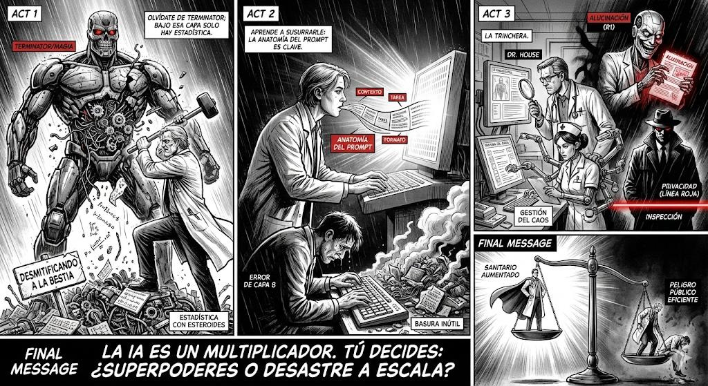

El contexto
Seamos claros: la tecnología en el hospital suele estar a medio camino entre un fax de 1990 y una película de terror de serie B. O no funciona, o funciona cuando no debe. Pero la IA ha llegado, y aunque ahora mismo te suene a ciencia ficción o a capricho de la gerencia, tienes dos opciones: domarla o dejar que te pase por encima como una camilla sin frenos.
Como diría un Heidegger moderno (y probablemente deprimido tras ver TikTok): "La tecnología no es neutra, es una herramienta". En nuestro caso, es la herramienta para que dejes de teclear obviedades y vuelvas a mirar a la cara al paciente. Esta guía no es otro de esos protocolos infumables que la dirección envía por correo y que tú usas para calzar la mesa coja del control de enfermería. Esto es un mapa de supervivencia.
El menú
El recorrido comienza derribando mitos. Olvídate de Terminator; aquí vamos a desmitificar a la bestia para entender que, bajo esa capa de "magia", solo hay estadística con esteroides y matemáticas probabilísticas. Una vez perdamos el miedo, pasaremos a la acción: aprenderemos el arte de susurrarle a la máquina. Porque hablar con una IA no es charlar con tu compañero de turno; requiere una estructura precisa, una "anatomía del prompt" que diferencia una respuesta brillante de una basura digital inútil (el clásico error de capa 8: el problema está entre la silla y el teclado).
Aterrizaremos estos conceptos en la trinchera asistencial, comparando cómo usan la herramienta los distintos gremios —mientras medicina busca diagnósticos de Dr. House, enfermería busca gestión del caos y eficiencia pura— y exploraremos usos reales de bajo riesgo para automatizar el papeleo sucio que nos roba la vida. Pero ojo, porque no todo es luz: abordaremos las "alucinaciones" (cuando la IA miente con la seguridad de un R1 que no ha estudiado) y las líneas rojas de privacidad que jamás debes cruzar si no quieres recibir una visita muy desagradable de la inspección.
Ten clara una cosa antes de pasar página: la Inteligencia Artificial es un multiplicador, no un milagro. Si eres un buen profesional, esta herramienta te regalará tiempo y superpoderes; pero si eres un incompetente, la IA solo servirá para que cometas errores garrafales a una velocidad y escala nunca antes vistas. Tú decides si quieres ser un sanitario "aumentado" o simplemente convertirte en un peligro público mucho más eficiente.
